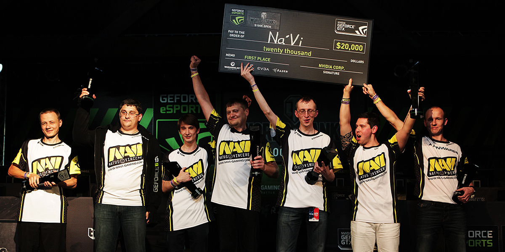

История
История киберспортивной организации
В октябре 2009 года, когда компьютерный спорт стремительно набирал популярность, а количество чемпионатов с большими призовыми неуклонно росло, меценат из Казахстана Мурат «Arbalet» Жумашевич на турнире Intel Extreme Masters в Дубае озвучил идею создания киберспортивной организации. Arbalet задался целью создать профессиональную команду, для которой он станет главным спонсором: предоставит игрокам площадку для тренировок и возьмёт на себя финансовую сторону вопроса, начиная с зарплат и заканчивая оплатой перелётов. Первым на предложение откликнулся starix — именно перед ним была поставлена задача сформировать звёздную пятёрку.
2010 год
За 2010 год NAVI завоевали 12 медалей (8 из которых — золотые) и заручились поддержкой огромной армии фанатов. Успехи игроков были отмечены порталом hltv.org: в ежегодный рейтинг вошёл Edward (5-е место), starix (4-е место), а markeloff был признан сильнейшим игроком сезона. Zeus, в свою очередь, получил звание лучшего капитана. В октябре 2010-го организация NAVI стала мультигейминговой: была создана команда по DotA. Любопытно, что первоначально в пятёрку вошли Goblak и Mag, но пробыли в ней относительно недолго. Свой окончательный облик команда NAVI по DotA обрела в начале 2011 года: в ней выступали Dendi, XBOCT, LighTofHeaveN, ArtStyle и Puppey.
2011 год
В 2011 году были созданы команды по FIFA, StarCraft II и League of Legends. Новые подразделения не оправдали надежд и впоследствии были расформированы. Исключением стал Yozhyk, который на данный момент считается одним из сильнейших игроков мира в FIFA и радует болельщиков победами. В его копилке более 20 медалей, заработанных на соревнованиях разного ранга. Главным киберспортивным событием 2011 года стал The International, турнир по Dota 2 с рекордным призовым фондом — $ 1 000 000. Стоит отметить, что на выставке GamesCom в Кёльне эта игра Valve впервые была представлена широкой аудитории.
2017 год
2017 год сложился для организации не лучшим образом: команды по Counter-Strike: Global Offensive и Dota 2 не могли вернуть былую форму, вследствие чего были произведены очередные изменения в их составе. В конце июля к команде по Dota 2 присоединились Crystallize и RodjER, заменив европейских легионеров, а обязанности капитана взял на себя SoNNeikO. Обновленный состав заиграл новыми красками: парни дошли до полуфинала DreamLeague Season 8, завоевали бронзу MDL Macau, а также триумфально обыграли в финале Adrenaline Cyber League команду Virtus.pro.
2018 год
В 2018 году в Natus Vincere появилось подразделение по Playerunknown's Battlegrounds — популярной игре в жанре Battle Royale. PUBG-состав завоевал сердца фанатов уже на дебютном турнире: Рождённым Побеждать покорился LAN-финал первого сезона Global Loot League с призовым фондом в размере $ 50 000. В Минске, где проходил финальный для СНГ квалификационный этап чемпионата мира, NAVI вновь одержали победу, подтвердив статус лучшей команды региона. На PUBG Global Invitational 2018 в режиме от первого лица NAVI стали четвёртыми, заработав $ 60 000. Состав по CS:GO также продолжил радовать фанатов победами и значительно укрепил свои позиции на мировой арене. NAVI завоевали бронзовые медали на чемпионатах ELEAGUE Major: Boston 2018, ESL Pro League Season 7 и ELEAGUE CS:GO Premier, серебряные — на DreamHack Masters Marseille 2018 и SL i-League Season 4, а также пополнили коллекцию трофеев тремя кубками: SL i-League Season 5, CS:GO Asia Championship и ESL One: Cologne 2018. После столь впечатляющей череды успешных выступлений команда Natus Vincere по праву закрепилась на второй строчке мирового рейтинга, а Александр «s1mple» Костылев был отмечен пятью наградами MVP — он стал первым игроком в истории CS:GO, которому удалось получить это звание без победы на турнире. На чемпионате мира FACEIT Major: London 2018 Рождённые Побеждать вновь доказали, что являются одной из лучших команд мира: NAVI остановились в шаге от чемпионства, уступив в финале Astralis.